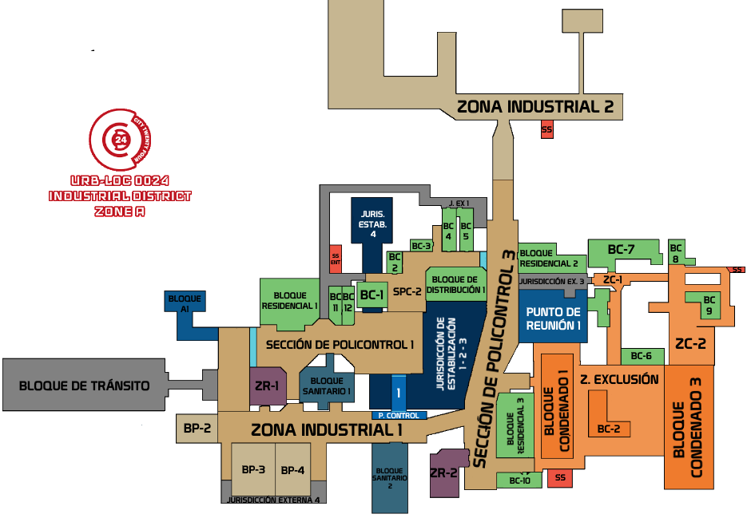

Manual de Procedimientos del Cuerpo de Protección Civil
Manual de Procedimientos del Cuerpo de Protección Civil

Capítulo 1: Introducción
Este manual ha sido desarrollado para ofrecer a los agentes del cuerpo información clara y facilmente accesible sobre algunos de los protocolos del cuerpo. Cabe destacar que gran parte de la información que los agentes deben conocer no se encuentra en este libro, para acceder a la información completa es importante que todo agente revise en su totalidad la información cedida en la base de datos interna. [FORO OOC]
ADVERTENCIAEste manual NUNCA puede ser visionado por alguien externo al cuerpo sin la autorización de comandancia. Los agentes que lo porten fuera del nexo mantienen la responsabilidad de que nunca les sea sustraído. También debe evitarse su revisión en público y no puede mencionarse su existencia a ninguna persona externa al cuerpo. Las unidades que incumplan estas normas serán duramente sancionadas.

Sección 1.1: Objetivo del Manual
El objetivo de este manual es proporcionar directrices claras y detalladas para todos los miembros de Protección Civil, asegurando que cada agente esté equipado con el conocimiento y las habilidades necesarias para llevar a cabo sus funciones de manera eficiente y segura. Este documento cubre desde protocolos básicos de patrullaje hasta procedimientos de respuesta ante emergencias y manejo de situaciones críticas.Capítulo 2: Rangos
Rangos de Protección Civil y Responsabilidades
Todos los agentes deben investigar y prevenir el crimen en la ciudad pero dependiendo de sus rangos irán ganando más
responsabilidades y autoridad dentro del cuerpo. Las unidades de más rango siempre podrán tomar el control de las
patrullas activas de menor rango.
Se espera de los agentes que promuevan el compañerismo dentro del cuerpo, aunque seguimos una jerarquía, nuestro
objetivo es imposible sin una cohesión y coordinación perfectas.
Es importante recordar que:
- ante cualquier duda sobre cómo proceder, siempre es mejor consultarla antes de actuar.
- los límites que tenemos como agente; No debemos abusar de la autoridad y debemos seguir siempre la normativa de los códigos y la tabla de delitos para saber como proceder y mantener una cordialidad con el servidor IC y OOC.
Rangos de comandancia
La comandancia de la CPC es la jefatura del cuerpo, tienen mucho más poder que una unidad ya que ellos pueden autorizar cosas fuera del procedimiento estándar. Pueden cambiar el código de la ciudad, dictaminar sentencias sobre individuos o autorizar operativos por toda la ciudad. Los que llegan a estos rangos son los mejores dentro del cuerpo de protección civil, por lo que todas son unidades de élite.
- CPT -
Solo hay un capitán por sector. Es el encargado de todas las fuerzas de vigilancia de la zona por lo que suele estar en el nexo monitoreando la información que le transmite el resto de la comandancia. Es sabido dentro del cuerpo que siempre que el capitán aparece algo malo ocurre. No suele ser buena señal. Cualquier orden dictaminada por él, debe ser acatada.
- DVL -
Aunque no imposible es raro ver a más de dos divisores en un mismo sector. Se encargan de coordinar a las unidades de élite, de mantener el cuerpo en completo funcionamiento y además de salir a la calle a coordinar los operativos con ellos. Pueden cambiar el código de la ciudad si lo ven necesario.
- EPU -
Las unidades de élite son el menor rango de la comandancia, tienen autoridad para dirigir y ordenar a todas las unidades del cuerpo. Este tipo de comandancia es la que está al pie del cañón con las unidades. Aunque no puede cambiar el código de socio-estabilidad pueden autorizar cualquier acción u operativo dentro de la ciudad.
Rangos dentro del cuerpo
- I1 -
Este rango, es el último antes de llegar a la comandancia por tanto se espera de él la excelencia.
Todas las unidades pueden llegar a tener asignadas una investigación, sin embargo el i1 puede ir mas allá. Puede
autorizar interrogatorios, detenciones y registros dentro de las investigaciones a su cargo sin necesidad de que la
comandancia los autorice. (No podrá establecer castigos o sentencias).
Generalmente las investigaciones grandes se asignan a un i1 dando igual quien las haya propuesto.
Permisos:
- Permiso para realizar registros a las viviendas de forma aleatoria de código amarillo y superior. (Sin autorización de la comandancia, pero se deja una nota en el discord)
- Con frecuencia se encargará de dirigir y coordinar investigaciones, pudiendo autorizar detenciones e interrogatorios para conseguir más pruebas. (Sigue necesitando autorización de comandancia para aplicar sentencias)
- Permiso para contar con armamento primario de alto calibre.
- Puede ser considerado para ascender a comandancia.
- I2 -
Para este rango es necesario recibir un reemplazo de memoria. Permite tener otra especialización y ya se le empieza a considerar una unidad de referencia. Aunque para la mayoría de actuaciones relevantes siempre hace falta comandancia de por medio, se espera de un i2 que sepa guiar a los otros agentes de protección civil de forma correcta cuando no haya comandancia disponible.
Permisos:
- Permiso para solicitar un recuento de bloque aleatorio, durante el código amarillo. (Se solicita a comandancia)
- Permiso para portar su arma primaria durante las patrullas. (Independientemente del código)
- Puede realizar un segundo curso de especialización.
- I3 -
Este es el último rango antes de dar el paso de no retorno en el cuerpo. En este momento ya se tienen bastantes responsabilidades y se espera de esta unidad que sea un ejemplo para todos sus compañeros de menor rango. A partir de este rango, uno puede escoger no ascender más si no desea recibir un reemplazo de memoria.
Permisos:
- Permiso para portar armamento primario de bajo calibre, priorizando la porra.
- Permiso para llevar un kevlar de mayor calidad.
- Permiso para solicitar un registro aleatorio a un local o apartamento de código amarillo y superior. (Se solicita a comandancia)
- Podrá realizar el curso de especialización en el equipo de rappel.
- I4 -
En este rango se empiezan a dar mayores responsabilidades a la unidad. Se espera que empiece a cuidar y educar a sus compañeros de menor rango. Además, puede empezar con su primera especialización.
Permisos:
- Puede entrar a la zona de exclusión solo o acompañado. (No recomendable ir solo)
- Permiso para ordenar amputaciones a unidades de menor rango si un ciudadano cumple los requisitos para la misma. (-15 puntos de lealtad o orden de comandancia)
- Permiso para realizar un curso de especialización de equipo (Previa autorización de comandancia).
- Puede realizar palizas y registros aleatorios en la calle en código amarillo y superior. Pueden ordenar a rangos inferiores realizar dichas acciones.
- I5 -
En este rango oficialmente uno forma parte del cuerpo de protección civil. Se espera que haga las funciones básicas. Investigar, oprimir y seguir las directrices que se le ordenan. Ya desde este rango se premiará a los que inicien y propongan sus propias investigaciones/iniciativas. Ya pueden castigar los crímenes como se indica en la tabla de delitos por si solos.
Permisos:
- Puede llevar a los RCT a patrullar junto a él por la ciudad. [NUNCA EN LA ZONA DE EXCLUSIÓN O SUBURBIOS AUNQUE EL RCT ACCEDA]
- Permiso para entrar a la zona de exclusión en mínimo grupos de 3 unidades de su rango o superior.
- Permiso para portar armamento secundario estándar. Únicamente pueden utilizarlo en situaciones de VIDA O MUERTE o bajo la orden de un superior. Cualquier otro uso será sancionado. Siempre priorizará el uso de la porra al patrullar.
- Permiso para ejecutar amputaciones si un ciudadano cumple los requisitos para la misma. (-15 puntos de lealtad o orden de comandancia)
- Permiso para patrullar por la ciudad en código verde y amarillo.
- En caso de encontrarse en código rojo, para salir de la zona de policontrol 1 será necesario patrullar en binomios con una unidad del mismo rango o superior.
- RCT -
Una vez que alguien entra en el cuerpo, se considerará como un agente en prácticas. Se espera de él que aprenda, pregunte por todo y se prepare para entrar al cuerpo de verdad. Tienen la suerte de que sus errores son menos tenidos en cuenta en este rango. Se desconoce que ocurre con los que no superan este proceso.
Permisos:
- Equipo limitado a: Porra, traje y radio.
- Únicamente podrá patrullar por la sección de policontrol 1, necesita permiso/acompañamiento para dirigirse a otra zona.
- En código rojo no deberá salir de nexo sin una unidad que le acompañe.
Capítulo 3: Códigos radiales
En este apartado puedes encontrar los códigos de uso radial. Es importante destacar que estos códigos se utilizan generalmente cuando por algún motivo debemos comunicarnos por radio de la forma más confidencial posible. Es por eso que debe mantenerse su significado confidencial ante cualquier persona ajena al cuerpo.
| Códigos Radiales | |
|---|---|
| 10-0 | Precaución, peligro |
| 10-2 | Negativo |
| 10-4 | Afirmativo / Recibido |
| 10-5 | Repita |
| 10-7 | Fuera de servicio |
| 10-8 | Entrando en servicio |
| 10-9A | Ocupado |
| 10-9B | En local |
| 10-10 | En tránsito |
| 10-11 | En escena |
| 10-12 | Atendiendo a aviso |
| 10-19 | Volviendo a Jurisdicción E. |
| 10-25 | Escoltando/Escoltar |
| 11-97 | Sospechoso en huida |
| 11-99 | ¡Oficial bajo riesgo. ¡Refuerzos! |
| Individuos | |
| 10-101 | Sospechoso |
| 10-102 | Prisionero |
| 10-103 A/B | Armado. Arma blanca / fuego |
| 10-104 | Físicamente imperfecto |
| 10-106 | Mentalmente imperfecto |
| 647 | Ciudadano |
| 647r | Conformista |
| 647f | Colaboracionista |
| 647e | Anticuado o marcado |
| Códigos de Respuesta | |
|---|---|
| Código 1 | Asistir según conveniencia |
| Código 2 | Asistir cuando sea posible |
| Código 3 | Se solicitan refuerzos inmediatos |
| Código 4 | No se requiere asistencia |
| Código 5 | Mantenerse alejado |
| Código 6 | Implementación estándar |
| Código 10 | Informe de estado, ubicación y EP. |
| Código 100 | Perturbación resuelta |
| Abreviaciones / otros | |
| 3A5 | Disparos |
| 5E | Explosivos |
| 404 | Disturbios |
| AAL | Asalto con arma letal |
| BYC | Búsqueda y captura |
| EP | Equipo de Protección |
| CDV | Cadáver |
| NAL | Nada al llegar |
| NE | Revitalización. Prepararse. |
| RVL | Revitalización |
| Transgresiones | |
| 12-1 | Actividad antivil |
| 12-2 | Incursión social |
| 12-3 | Peligro social |
| 12-4 | Fractura social |
Capítulo 4: Contrabando
Sección 4.1: Contrabando nivel amarillo
Materiales de artesanía de alta calidad: Excepciones locales con licencia y trabajadores de la
unión. Los materiales sospechosos tendrán una indicación en su descripción o un borde amarillo en el inventario.
+8 Unidades de materia prima: Excepciones locales con licencia y trabajadores de la unión. Los
objetos o materias primas no permitidas tendrán una indicación en su descripción.
La basura se identificará fácilmente: objetos rotos, recipientes vacíos, electrónica antigua (monitores, batería de
coche), o objetos que generalmente se nota que no tienen uso. Leer la descripción de los obj. para info.
Ropa no autorizada: Ropa de leales, prendas que tapen el rostro, etc. Chaquetas de partidario o
colaborador en un ciudadano sin ese estatus, bandanas de brazo.
Medicinas de curso legal sin la prescripción médica correspondiente: Excepción UMIC. Analgésicos,
suero, desinfectante.
Comida y bebida no autorizada: Principalmente proveniente de Xen, a excepción de lo enlatado.
Alimentos de procedencia de Xen, como carne de parásito, exógeno... A excepción de sanguijuelas enlatadas.
Sección 4.2: Contrabando nivel naranja
Radios de comunicación: A excepción de civiles autorizados, miembros de la unión. Cualquier tipo de
radio de mano.
Drogas y pastillas de atributos básicas: Excepción UMIC en el caso de las pastillas. Compuestos
químicos o explosivos, pastillas, jeringas o viales. Además de píldoras de colores de uso médico de nivel
básico.
Ropa, tarjetas, cerraduras o equipamiento de las uniones: Excepción miembros de la unión, o
herramientas dentro de propiedad privadas o locales autorizados. Cualquier prenda (chaquetas o trajes de protección
de la UTC, batas de la DIP o UMC...) Herramientas (martillos, picos, cajas de herramientas o parecidos de la Unión)
Cualquier tarjeta de acceso sin ser parte de esa facción.
Armas punzantes o contundentes: Exceptuando cuchillos sin filo o herramientas para locales
autorizados y unión. Armas contundentes como palancas o similares, cuchillos afilados, máscaras de gas, ropas
blindadas.
Dispositivos de restricción: Bridas o esposas, dispositivos de bloqueo (biocierres).
CID de otro individuo: Seguir protocolo de la tabla de delitos. Se revisa si la información
genética del individuo portando la CID es correcta, mediante interrogación, etc.
Sección 4.3: Contrabando nivel rojo
Armamento de fuego: Cualquier tipo de armamento. Pistolas, fusiles, subfusiles, o cualquier
fabricación que pueda disparar proyectiles.
Munición funcional: Si se encuentra inoperativa no será considerada ilegal. Cualquier tipo de
munición para armas de fuego.
Droga transhumano y pastillas de calidad: Pastillas excepción UMIC. La droga "Transhumano" y
cualquier pastilla de atributos superior al nivel básico.
Equipo de la Alianza: Cualquier herramienta o equipo exclusivo del cuerpo. Evisceradores
(robosierras), torretas de la alianza, creadores de tarjetas CID.
Artículos de propaganda contra la unión: Propaganda, desinformación.
Capítulo 5: Clasificación de Delitos
Sección 5.1: Delitos Menores
Correr y saltar sin motivo: -5 Puntos de lealtad + Re-educar o aviso verbal (a elección del agente)
Gritar sin motivo: -5 Puntos de lealtad + Re-educar o aviso verbal (a elección del agente)
Agresión a un ciudadano (Un golpe, empujón…): [-5/-15] + Administrar/Re-educar (a elección del agente)
Intoxicación pública: [-5/-8] + Re-educar
Desorden público: [-5 | -10] + Administrar/Re-educar. (El castigo más genérico, usado para muchos tipos de infracciones que impliquen mal comportamiento.)
Contrabando de nivel amarillo: [-5 | -15] Dependiendo de la cantidad + Administrar
Resistirse a la autoridad (huir, zafarse, mentir): [-5 | -20] + Administrar
Reunirse tres personas o más en la calle, de código amarillo en adelante: Aviso verbal, de repetirse re-educar + [-5]
Sección 5.2: Delitos Medios
Agresión a un leal de grado azul o superior: [-10 | -20] + Administrar
Contrabando de nivel naranja: [-15 | 25 ] + Re-educar/Administrar
Deambular en código rojo: [-20 ] Administrar, interrogar y registrar.
Transitar la ciudad sin bandana: [-15 | -30 ] + Interrogar y aislar hasta que llegue un superior si se cree necesario.
Difusión/posesión de propaganda ilegal: [-15 | -30 ] + Interrogar y revisar su apartamento/local.
Ser encontrado en la zona de exclusión: [-15] Administrar y se le debe registrar. Cualquier objeto o acción que aumente su castigo debe tenerse en cuenta.
Tenencia de armas punzantes o contundentes: [-20 | -30 ] Administrar, interrogar y revisión de vivienda.
Contrabando de drogas: [-10 | -30] Administrar, si es una cantidad alta (+7) interrogar y registrar vivienda.
Robo: [-10 | -30] Administrar, interrogar e intentar recuperar los bienes. De creerlo necesario aislar y esperar a comandancia.
Sección 5.3: Delitos Graves
Posesión de contrabando rojo: [-30 | -50] Administrar, interrogar sobre el origen y aislar hasta que llegue un superior de creerlo necesario.
Agredir de cualquier forma a un agente de protección civil: [-20 | -50] Administrar, interrogar y aislar hasta que llegue un superior de creerlo necesario.
Asesinato: Aislar y esperar hasta que llegue un superior.
Intento de asesinato (Ataques que podrían haber sido letales o intentos premeditados): [-30 | 50] Administrar, interrogar, dependiendo de la intencionalidad del ataque, aislar hasta que llegue un superior.
Tenencia de armas de fuego: Administrar, interrogar sobre el origen y aislar hasta que llegue un superior.
Producción de drogas o armas: Administrar, interrogar y aislar hasta que llegue un superior.
Falsificar identificación/poseer varias identificaciones: [-20 | -40] Administrar, interrogar y aislar hasta que llegue comandancia de creerse necesario.
Cualquier bandana negra o ciudadano que haya bajado por debajo de 15 puntos, será amputado. Las amputaciones si no hay una orden diferente de comandancia de por medio, se realizarán en la sala de reubicación fuera del mundo.
Capítulo 6: Ramificaciones y Mejora de Equipamiento
Al llegar al rango i4 se podrá escoger la primera especialización de equipo, las diferentes especializaciones darán oportunidades a los líderes de escuadrón a la hora de organizar a las unidades en los operativos. Es importante seleccionar bien la rama que se desea en cuestión, ya que no podrá escogerse una segunda especialización hasta en rango i2, necesitando un reemplazo de memoria para llegar.
El rappel y el kevlar pesado se desbloquean en el rango i3, al igual que el armamento primario ligero.